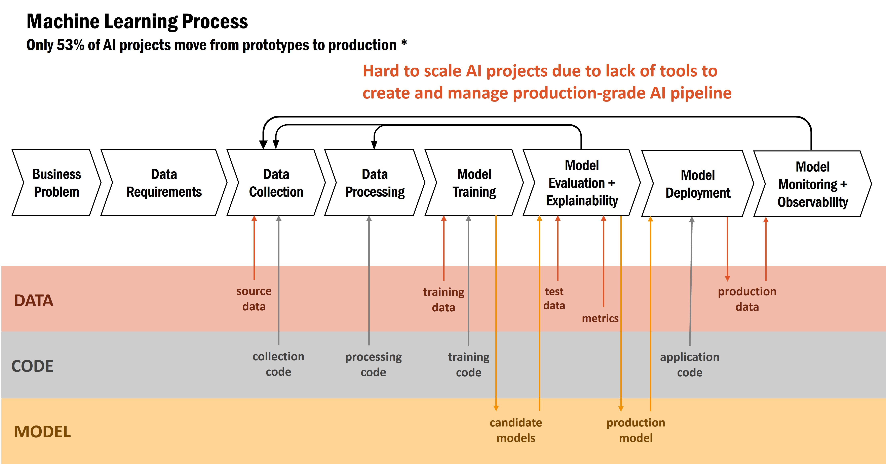
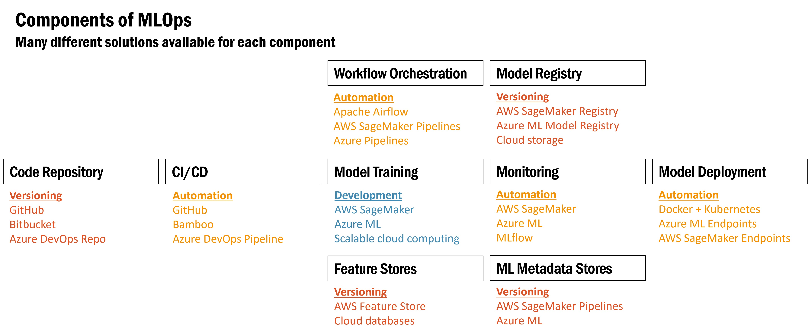
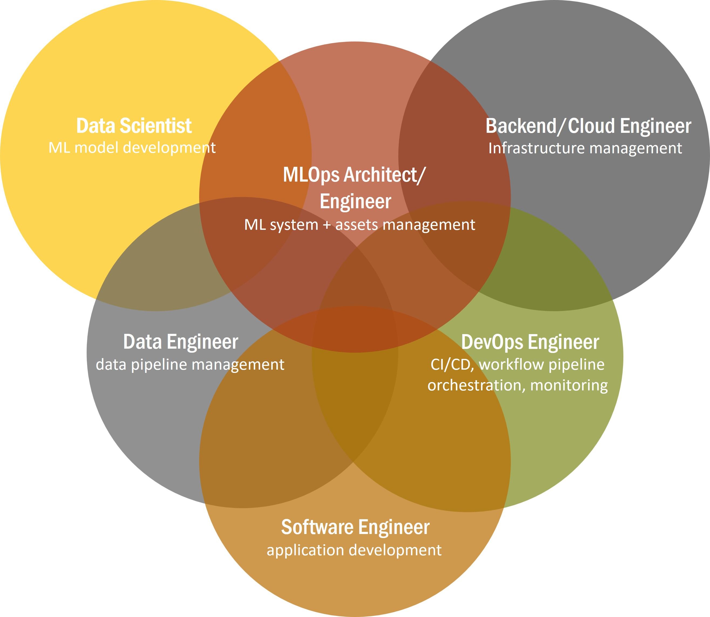
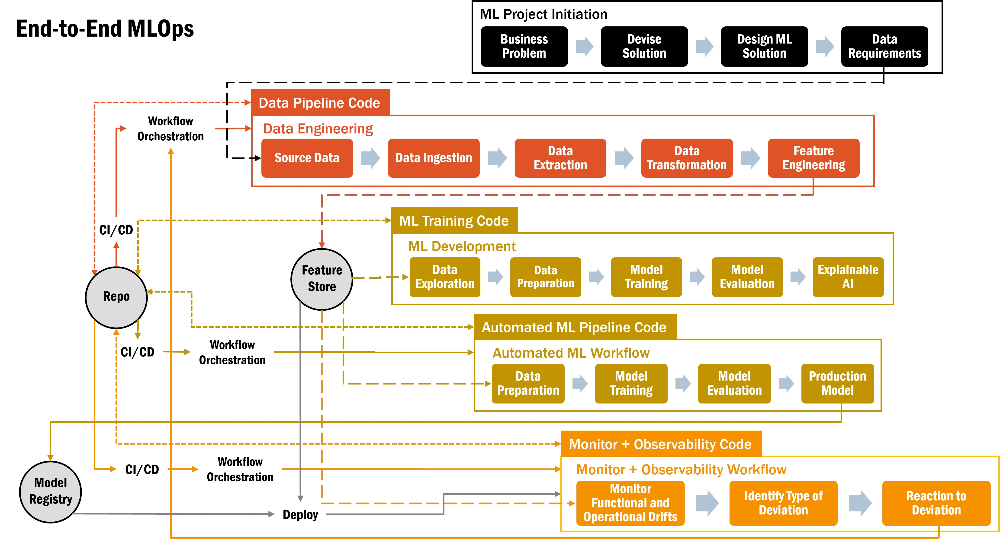

Machine learning process generally involves ideation to come up with a business problem, what data is needed to solve this problem, how to get this source data and what processing steps are needed for the data before it can go into model training.
Typically, there’s a couple of candidate models to evaluate and compare based on various metrics like accuracy, F1 score, AUC and such.
There’s also an often omitted step of explaining what the model is doing, why its making these predictions in order to build trust in the model.
Depending on the models’ performance, there maybe a need to reassess the data being collected, maybe a now realized critical piece is missing, or reassess the data processing steps to improve upon the model’s performance.
Once a production model is decided upon, it will be integrated into the application workflow and deployed to make inferences on real-world data.
Since real-world data and data used during model training may start to drift and deviate over time, model performance may begin to decrease which require constant monitoring to detect and observability to solve.
These are the essential steps in machine learning.
Despite the benefits and value of AI, only 53% of AI projects progress into production according to a Gartner survey .
There are many reasons for such a low percentage, including
- The AI solution is not the right one for the problem – that goes back to the business problem and applicability of AI. Not all problems can be solved with AI.
- There’s lack of trust in the model. Explainable AI is a big factor now especially with biases in models that often never came up during model development.
- Real world data is too different which is especially true in healthcare. That’s why monitoring and observability is so important.
- From the Gartner survey of CTOs and CEOs, the main reason is the lack of tools to create and management production-grade AI pipeline, too much labor intensive manual steps.

Only a slim majority of AI projects progress into production mostly due to lack of tools to create standardize and repeatable processes for scalable ML operationalization
There are indeed many solutions available to help out on each of the many steps in MLOps.
- Code repositories for code versioning like GitHub and BitBucket.
- CI/CD automation tools with GitHub and Bambo.
- Automated model training with AWS SageMaker, Azure ML and even inhouse ML code running in the cloud.
- Model monitoring with the same cloud ML tools, AWS SageMaker and Azure ML, and also Mlflow.
- Model deployment tools with SageMaker and Azure or inhouse with Docker and Kubernetes.
- Feature stores from AWS and even cloud databases to store offline and online features, model registries from AWS and Azure, along with the models metadata like all the algorithms, hyperparameters, and such.
- Workflow orchestrated and automated with Apache Airflow, and Pipelines.

Component of MLOps
Despite the availability of many solutions, there is still the need for the know-hows to configure and connect these components with different roles needed to perform the different functions.
Data engineers are needed to connect the data pipelines, data scientists to develop the models, software engineers to integrate with the application, devOps for all the automation and workflow, backend/cloud engineers for the cloud infrastructure and MLOps engineers for the ML system as well as data and model management.

Overlapping roles and functionalities in MLOps
Building with these components results in end-to-end MLOps.
- Starting with the ML project initiation by framing the business problem and determining the data requirements.
- Data is ingested from source data and extracted to get the pieces of data needed, data transformation and feature engineering to get the data into the needed form for storage into the feature store for offline model training.
- Features are used in ML training, after data exploration and data preparation by splitting, kfolds and normalization like standard scaling or minmax.
Evaluate the different models and try to explain each model for transparency and build trust.
- Once a model is ready for deployment, the finalized development steps can be automated and the production model stored in the mode registry and hyperparameters in the metastore.
- All the data engineering code, ML training code and automated ML pipeline code gets versioned in the repo and automatically built and deployed with CI/CD like Bamboo or GitHub.
- Once any model is deployed, it needs to be monitored to see if the ML models’ performance degrade over time and becomes unreliable.
- Monitor functional performance in terms of data drifts and also operational performance in terms of infrastructure health e.g. I/O disk, memory/disk/CPU/GPU utilization, network/inference latency, failed requests.
However, monitoring can only detect the problem.
- Need observability to solve the problem by understanding the state of ML system by looking at historical outputs like metrics, traces, logs, data (features and targets).

End-to-end MLOps